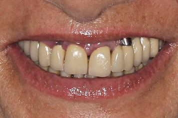
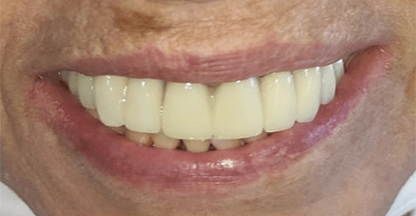
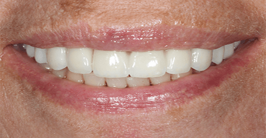
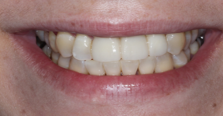

מקרה 01תוצאה אמיתית מהמרפאה


יותר מ־15 שנות ניסיון בשיקום מקרים מורכבים, שתלים ואסתטיקה דנטלית — עם אבחון מתקדם, תכנון אישי וליווי לכל אורך הדרך.

כל זוג מוצג בגודל שמתאים לאיכות המקור, בלי מתיחה ובלי חיתוך שפוגע בפרטים.








התוצאות משתנות ממטופל למטופל ונדרשת בדיקה ותוכנית טיפול אישית.
ד״ר תחסין יונס מתמקד בשיקום הפה, בתכנון מקרים מורכבים וביצירת איזון בין תפקוד, בריאות ואסתטיקה טבעית.
התמונות הקיימות באתר קטנות יחסית, ולכן הן מוצגות בגודל מבוקר ששומר על חדותן ולא מותח אותן לרוחב המסך.


תכנון כולל למקרים מורכבים, תפקוד ואסתטיקה.
תכנון שתלים ושיקום ארוך טווח.
שיפור מדויק עם מראה טבעי.
סריקה ותכנון דיגיטלי מותאם אישית.
השאירו פרטים וצוות המרפאה יחזור אליכם לתיאום פגישת ייעוץ.